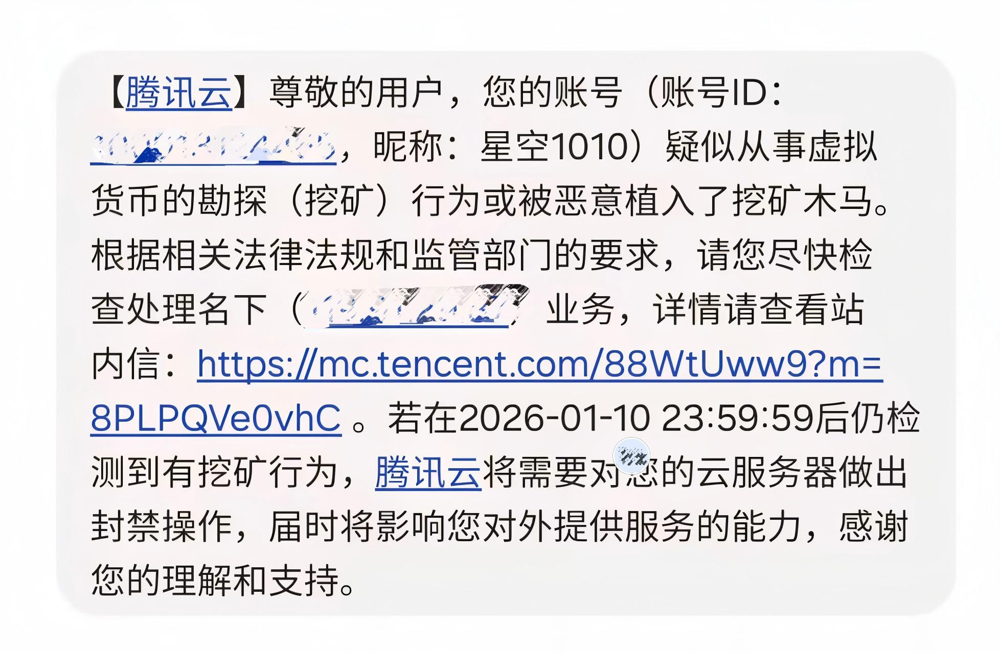

记录一次在腾讯云 Ubuntu 服务器上，发现并彻底清理挖矿木马的完整过程，希望对后来者有参考价值。
起因
起因是腾讯云短信提醒：“疑似从事虚拟货币的勘探（挖矿）行为或被恶意植入了挖矿木马”，

因为服务器上部署有重要业务，立刻开始排查，发现异常现象：
- top命令发现异常 .javago 进程（我的业务内容基本不涉及java），以及奇怪的进程名systemd-helper，networkd-dispat等，且都属于之前使用的临时用户datauser.
关键异常进程分析
1️⃣ 可疑进程特征
1
2
|
PID USER COMMAND
1379705 datauser .javago
|
异常点：
- 进程名以
. 开头（刻意隐藏）
- 非 root 用户运行
- CPU 长期占用
- 名称与已知挖矿木马高度一致
2️⃣ 确认进程来源（关键证据）
1
2
|
ls -l /proc/1379705/exe
output: /home/datauser/.javago (deleted)
|
这一步直接实锤：
木马文件已从磁盘删除，但仍在内存中运行
—— 典型的“内存驻留型挖矿木马”
发现挖矿的“自愈机制”（核心）
进一步排查 datauser 的 crontab：
1
2
|
sudo crontab -u datauser -l
（忘记截图了）
|
发现 每分钟检测一次挖矿进程，不在就立刻拉起，重启后自动恢复。十分经典的 “挖矿木马持久化方案” 。
应急处置流程（实战）
1
2
3
4
5
6
7
8
9
10
11
|
1. 停 cron + 杀进程
sudo systemctl stop cron
sudo pkill -f javago
2. 删除 cron 持久化
sudo crontab -u datauser -r
sudo rm -f /var/spool/cron/crontabs/datauser
3. 删除挖矿文件
sudo rm -rf /var/tmp/.font-cache-d0443d
sudo rm -f /home/datauser/.javago
|
顽固点：为什么删不了 datauser？
删除用户时遇到错误：
1
|
userdel: user datauser is currently used by process systemd-cached
|
真相是：
- 这些并不是真正的 systemd
- systemd / networkd 只能由 root 运行
- 它们是木马伪装的进程名，用来阻止删除用户
正确处理方式
1
2
3
|
sudo kill -9 13947 13948
sudo loginctl terminate-user datauser
sudo userdel -r datauser
|
清理收尾
1
2
3
4
5
6
7
8
9
10
11
12
13
14
15
|
# 在 /tmp 发现以下文件：
.xmrig_all_lines
.xmrig_errors
.libc.so.6
.libsystemd.so.0
# 清理
sudo rm -f /tmp/.xmrig_*
sudo rm -f /tmp/.libc.so.6
sudo rm -f /tmp/.libsystemd.so.0
# 检查
ps aux | grep javago
grep -R javago /etc/cron* /var/spool/cron
systemctl list-unit-files | grep -E "java|go|cache"
|
问题总结与反思
本次入侵为典型的挖矿木马攻击，木马以普通用户 datauser 运行，通过 cron 实现自愈持久化，内存驻留并伪装系统进程名，最终调用 XMRig 进行门罗币挖矿。
因为之前设置的临时用户密码过于简单，未及时删除，导致服务器被扫，SSH 弱口令被暴力破解，以此为戒啊！！！